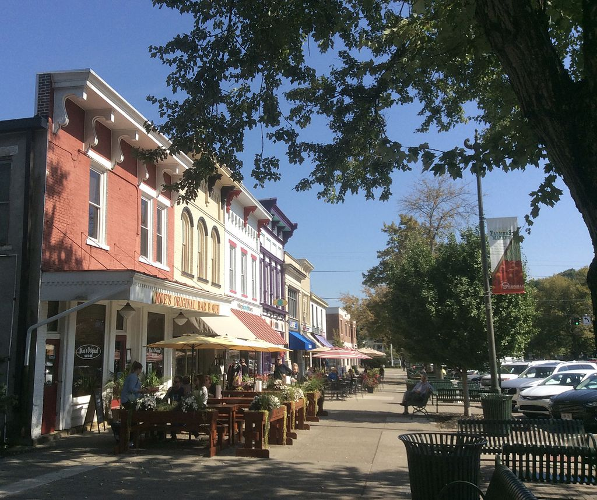

Checkpoint: Granville
Now you have made it to the town of Granville Ohio! This town used to play host to several tribes of Native Americans,
as many towns in the area did. This is in part evidenced by the earthworks in the town, namely Alligator Mound, as well as the Infirmary Mound,
which used to lie within the town. While the mound itself is no longer present, Infirmary Mound Park lies where the mound used to stand. Despite
this large Native American presence, when European settlers arrived around the year 1800, there reportedly was only one large Native American settlement,
the Wyandotte settlement.
Initially, Granville was surveyed in 1797 as a part of the US Military District, land set aside for those whom served in the Revolutionary war. The first
to actually arrive in the area were the Welsh, as 4,000 acres were sold to a Welshman living in Philadelphia. The next large group of settlers to arrive
were from Granville, Massachusetts, and Granby, Connecticut, which were neighboring communities in New England. The town of Granville, Ohio, was in fact planned
to closely resemble a New England Town, but in the Middle of Ohio. This is evidenced by the style of buildings which were initially constructed here, some of which
still stand today, such as some of the houses, St. Luke's Church, and the Buxton Inn.
In the 1830's, Granville was home to five schools. Among them was Granville Literary and Theological Institution, which still exists today, though it is now
referred to as Dennison University. This campus is considered a major influence on the character of the town, and is included in the Granville Historic District,
as well as the National Register. In addition, the Granville Female Seminary was located near present-day Dennison University, and was also one of the five
schools in Granville at the time. However, this particular school ceased to exist in the 1890's.
Granville also has an interesting link to the canal system. In 1825, Ohio's Legislature autorized the construction of a canal system from Newark to Cleveland. Knowing
that the canal would pass through the ceneter of Newark, Granville businessmen ceased the opportunity to create a feeder canal connecting Newark to Granville. This was
completed in 1833, and allowed for Granville to send and receive shipements. However, within a few decades of this canals completion, railroads became more common,
and the usage of canals waned. However, railraods did not make it to Granville until 1880. By this point, these railroads had little impact on the development of Granville,
though the interurban lines, such as the one that connected Granville to Newark, had a larger impact (information courtesy of Village of Granville,
image courtesy of Chamberednautilus / CC BY-SA).
.jpg){kind=link}
To further explore Granville, click here
Pedaling for Parkinsons claims no affiliation with Google Street View